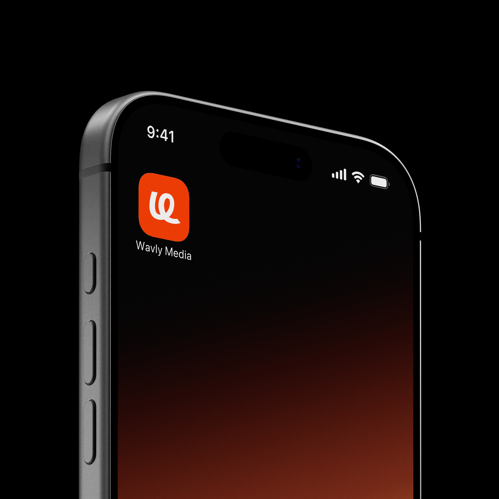
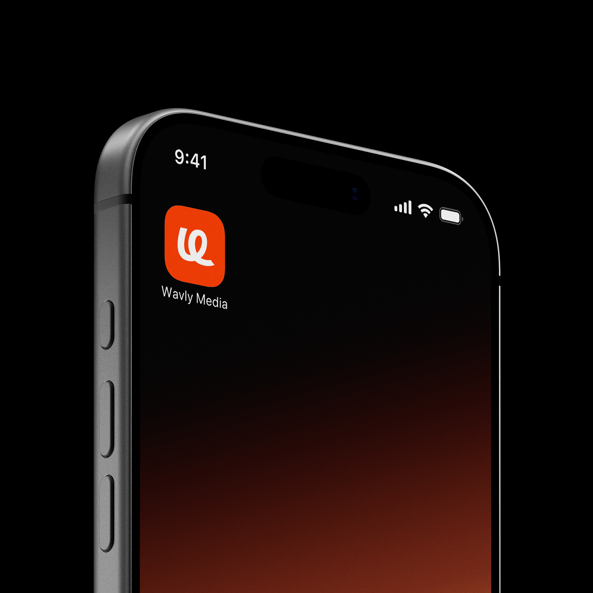

Wavly Media is a digital-first media company working at the intersection of content, technology, and brand communication. The goal of this project was to create a visual identity that felt confident and contemporary, while remaining flexible enough to scale across digital platforms and physical applications. Rather than focusing on short-term visual trends, the identity needed to function as a system clear, adaptable, and durable.


Wavly Media required an identity that could support a growing range of outputs, from digital products and presentations to print and branded environments. The challenge was to balance clarity with expression: to build a brand that felt distinctive without becoming restrictive, and structured without feeling rigid. This meant prioritising consistency, hierarchy, and legibility across all touchpoints.

 


The work began with defining the role the brand needed to play. Instead of leading with visual style, the focus was placed on understanding how the brand would be used where it appears, how often it changes, and how it needs to perform over time. This led to a system-first approach, where typography, colour, and layout decisions were made to support scalability and long-term use rather than visual novelty.

The visual identity is built around strong typographic hierarchy and controlled use of colour. Typography acts as the primary brand carrier, ensuring clarity across screens, presentations, and printed materials. Colour is used deliberately not as decoration, but as a functional tool to guide attention and reinforce recognition. Spacing and layout rules provide consistency, allowing the identity to adapt across formats while maintaining coherence.
The result is a flexible visual identity that supports Wavly Media’s growth and evolving needs. By focusing on structure rather than surface-level styling, the system allows the brand to scale confidently across platforms while maintaining a clear and consistent presence. The identity is designed to work today and as the company grows.